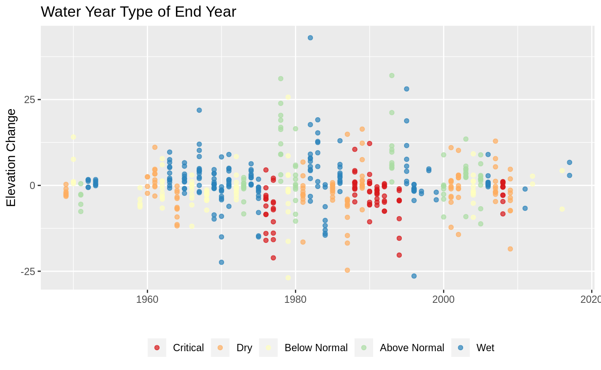
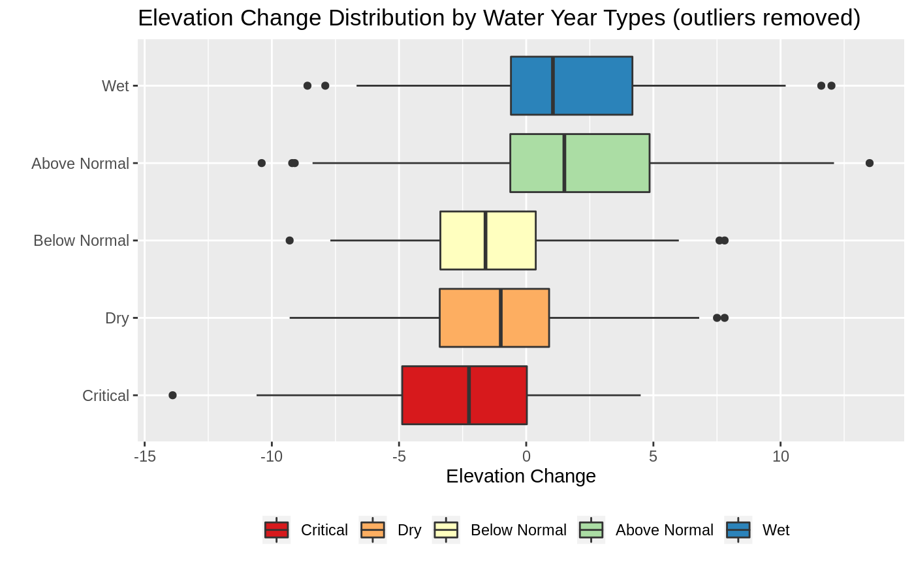
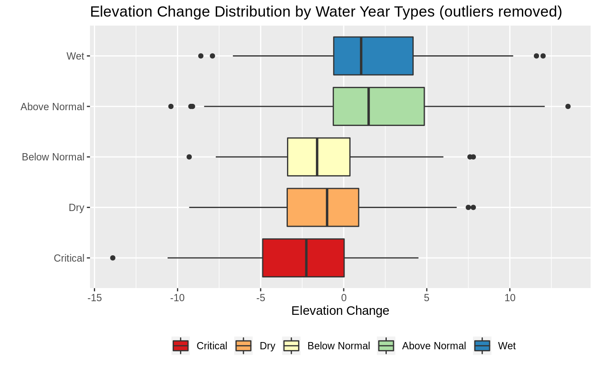
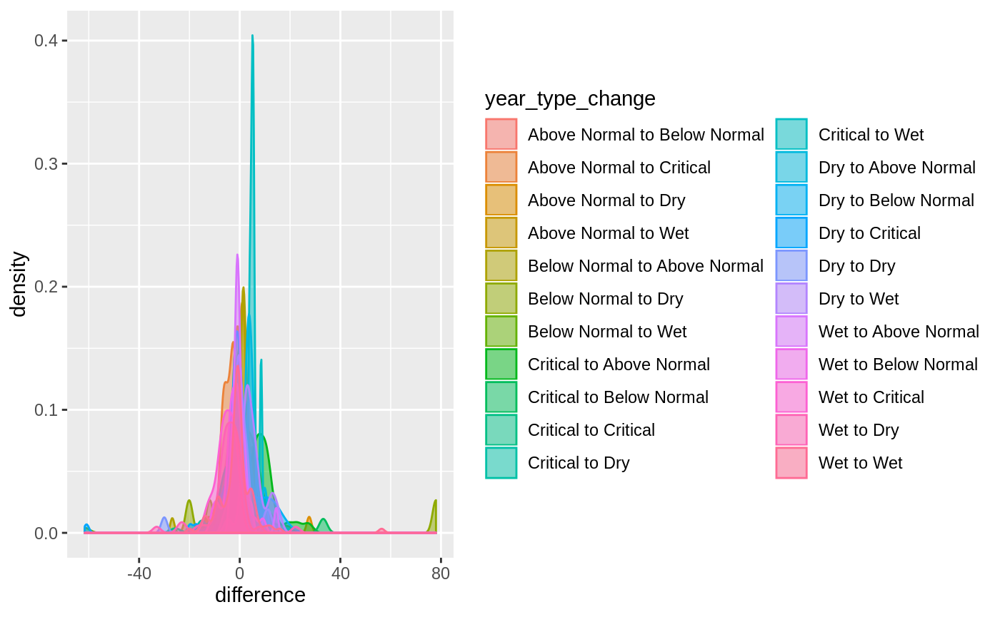

Groundwater Trends
groundwater-trends.RmdIntroduction
In this article I explore groundwater elevation trends, we are interested in exploring elevation differences by water year. We will focus only on wells that have had recent measurements. Ultimately we would like to develop confidence intervals for elevation change based on the characteristics of a water year.
Groundwater Well Selection
We will focus on wells where a groundwater elevation was reported for 2018. This results in 23 candiate wells for analysis. This number will be smaller as we seek to make comparison across years.
Elevation Change
Here I look at the change of elevation in one year. Here are the assumptions and requirements for this analysis:
- site code must have recent data to at least 2018
- only subsequent years of data will be taken into account
- when attaching water year types to the fall difference we will always use the water year for September. For example even though the difference is from November 1980 to November 1981, the water year associated with this difference will be 1980.
How the difference is calcualted
The difference is calculated by subtracting the “start year” (smaller of the years) from the “end year”. This means that a positive value indicates elevation increase and a negative value indicates elevation decrease. When looking at the plot, a point on 1980 shows the difference between 1979 and 1980. Lastly this subtraction is done on each well, so when looking the plot a single point shows the difference between two years at an individual site code. We can see the spread of the difference values for a given year by focusing on one year on the x-axis and observing the range of values on the y-axis.
Elevation Change Time Series By Water Year Type
Here I color code the points by the water year type of the end year. That is, when looking at the year 1980 the value indicates the difference between wells from 1979 to 1980 but the color shows the water year type for 1980. No obvious patterns appear in the data. I instead switch to looking at the distribution of elvetaion changes for each of the water year types.

Distribution of Elevation Changes
With the water years attached we can do some statistics using these as categorical variables. We are mainly interested in significant differences in elevation change as a result of the water year types. In order to do so we need to have enough samples from the each of the water year types.
Year Type Representation
| Year Type | Total | Percent of data (%) |
|---|---|---|
| Critical | 127 | 18 |
| Dry | 144 | 21 |
| Below Normal | 88 | 13 |
| Above Normal | 118 | 17 |
| Wet | 214 | 31 |
Most of the data is from either a Wet or Dry year, but we do have enough samples each of the other water years.
Significant Differences between year types
In this section I analyze the distribution of elevation change between the water year types. In particular we are interested in answering the following questions:
- Is there a significant difference between dry years (dry, critical) and wet years (Abobe Normal, Wet).
- Does the water year type of the previous affect the elevation change? If so how much?
- Given a water year type is there a range of expected elevation change we can anticipate?
- For all of the above, if we can’t answer then question now, what additional data would we need to do so?
Several assumptions must be met before we develop statistical test
Question 1: Significant Differences between Year Types
In this section I explore the differences between the elevation changes across the different water year types. We want to be able to state whether the distributions shown in the boxplots below are significantly different from one another.
 

The plan here is to use two sample test to check for significant differences. There are several assumtpions that need to be satisfied in order for this analysis to be valid, we check these below.
Assumption checks
Normality
From the boxplot we can see that the elevation change across all of the water year types are at least symmetrical. There might be some issues from the detected outliers. I apply the Shapiro test to check for normality before and after removing outliers.
| Water Year Type | Total Sample | Total Outliers Detected | Test with Removed Outliers | Test on Full Sample |
|---|---|---|---|---|
| Critical | 127 | 8 | TRUE | FALSE |
| Dry | 144 | 14 | TRUE | FALSE |
| Below Normal | 88 | 4 | TRUE | FALSE |
| Above Normal | 118 | 8 | FALSE | FALSE |
| Wet | 214 | 15 | TRUE | FALSE |
From the above results we can see that none of the elevation change distrubtions (that include the outliers) can be assumed to be normally distributed. When we remove the outliers, counted under the Total Outliers Detected column, then most of the Water Year types can be considered normally distribute, with the exception of the Above Normal elevation changes.
Distribution of Elevation Changes by Water Year Transitions
In this section I encode the water year transition types, that is I just keep track of the water year of the start year and the water year of the end year and add this as a column to the dataframe.
Dry to Wet and Wet to Dry Transitions
Here I focus on the Wet to Dry and Dry to Wet transitions.

Critical to Wet and Wet to Critical Transitions